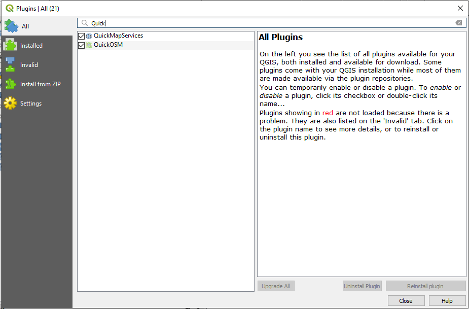
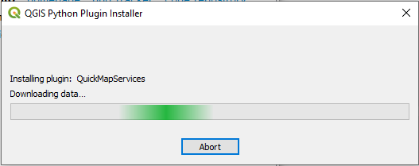
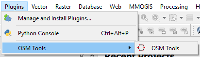
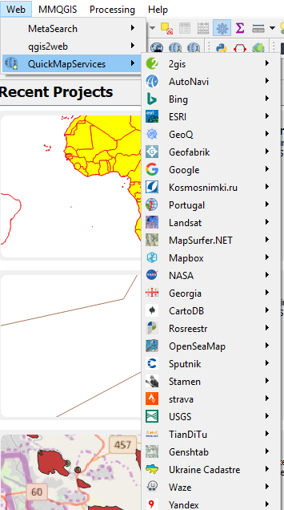
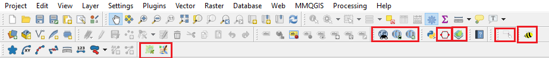
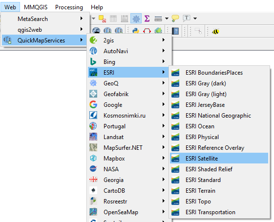
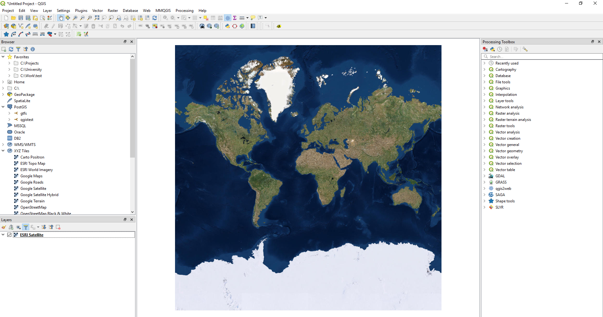

Plugins
Back To Basic ConceptsBack To Homepage
QGIS plugins are somewhat similar to ArcGIS's Toolboxes in the way that they offer more tools and operations that do not exist in the base software.
QGIS plugins are developed by people and companies that wish to contribute their tools to community, and are stored in the QGIS official pulgin repository.
They are available inside QGIS throught the plugins manager, To open it simply click the Plugins menu or alt+P and open the plugins manager.

We will be adding in this tutorial the QuickMapServices (or QMS) plugin which adds as the name suggests map services (and alot of them).
after the new window opens we can perform a search for "Quick" and see that i got 2 plugins back (because i'm offline), you need an internet connection to acces the repository.

After Selecting QuickMapServices from the list i can click on Install plugin and wait a few seconds (or mintues on a slow connection) for the data to be downloaded from the repository.

You can now close the plugin manager and start using your plugin.
Some plugins will appear under the Plugins menu, while some like QuickMapServices will appear under a seperate menu (in our case the Web menu)


Other plugins may only appear on the toolbars, in the image below each red square shows tools from a different plugin (the largest one is for QMS).

To test that our plugin is working we'll add the ESRI Satellite and add that web service to our map.

On the outmost zoom level it should look like this.

And thats it, Simple and easy to use, and now you know how to do that in Open Source.